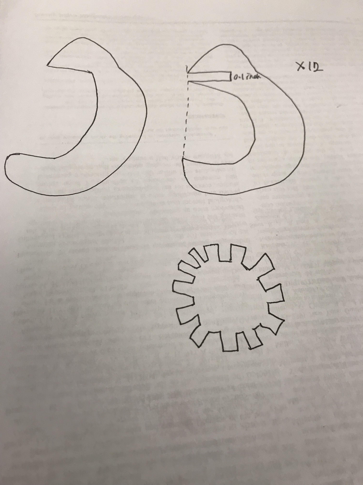

Huan's laser cut project!

Ideation
I was inspired by this online vase design as well as Yayoi Kusama's pumpkin design. I redesigned it based on my needs and created a vector file on illustrator. My cardboard is about 0.0934 inch, so I designed the vector shapes to have a 0.1-inch gap.

Trials and Errors
Then I went to Mill and ran a test drive, observing the movement of the red dot of the laser. At first, I set the size of my artboard randomly, but I realized that it was best to set the artboard's size as the size of my cardboard so that the laser cutter wouldn't go out of boundary. I measured the size of my cardboard: 28*19 inch, so I set my illustrator artboard and the laser cutter printing setting accordingly. I set the speed to 25%, power to 100%, and frequency to 50 based on Joshua's suggestion. After printing my first prototype, I found that I forgot to add a hole to the vase, which made the vase unable to contain flowers. I adjusted my draft on illustrator and found some new cardboards. I adjusted the gap based on the thickness of the new cardboard and tried again.
When cutting, another problem occurred: since cardboard was thicker this time, the laser could not cut through. Therefore, I tried several times and finally decided the laser cutter setting as:
Speed:15%; Power: 100%; Frequency: 70
Execution
It finally worked after several trials and tests! I was a little worried about the small flame around the laser when it was cutting but the staff there said it was normal. Finally I assembled the parts together and made a vase! It looked like a pumpkin, and could be used as a vase :).